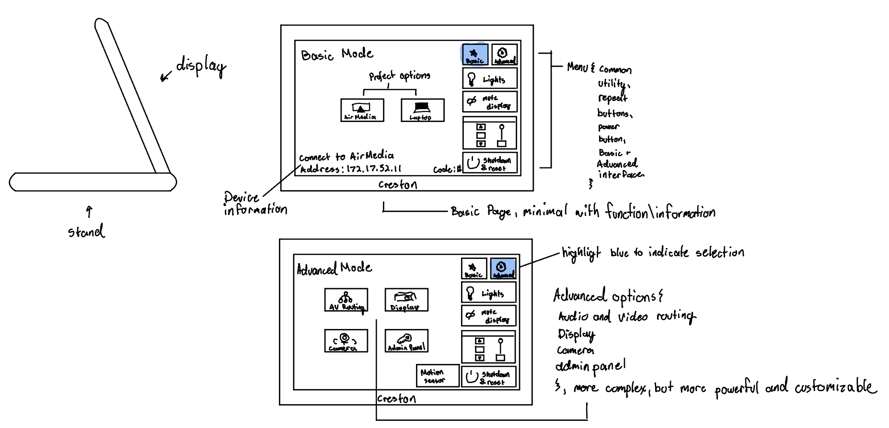
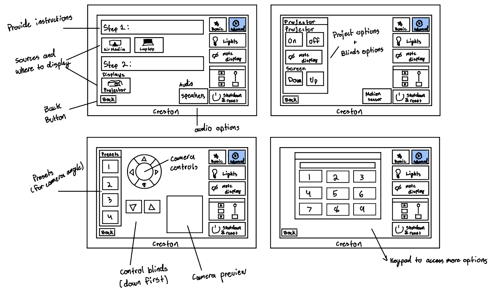
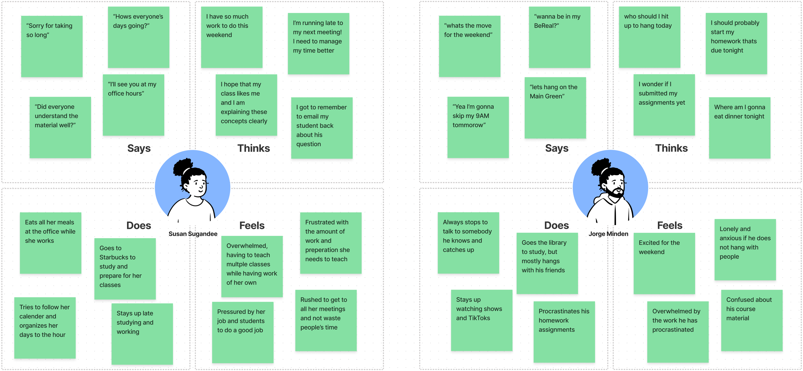
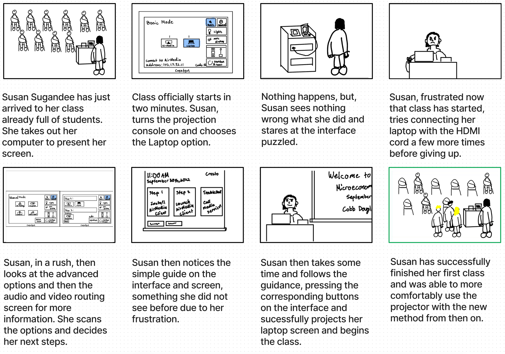

Did you know that you can control a room's lights, shades, and even audio all from the same interface? Almost all classrooms at Brown University have projecting capabilities that is controlled through a projection console. It helps to consolidate all the buttons required in the classroom into one interface. This website's goal is to explore and analyze the structure of the interface. We will analyze the projection interface within the context of its possible users.
Figure 1: 
Figure 2: 
This interface aims to simplify the complex
steps it would take to set up a room for a screen projection by consolidating them into this one interface.
Although the projector, lights, shades, audio, and screen all have their own set of controls, they can be controlled by this one interface.
It is used by many to project their screens, to show presentations, videos, and many more things from their electronic devices!
The initial page(Figure 1) is for fast and easy operations, with common fuctions in the utility bar to the right.
Then, there is an advanced page that brings you to a series of other pages (Figure 2) to have more custimzation and control over the room.
Preface: I observed different users who used the projection console throughout Brown University buildings. I were able to observe professors, teaching assistants, and students to provide a sample that represented a broader range of ages, jobs, and socioeconomic demographics since Brown's population is diverse.
Based on our observations and interviews, we can utilize that data to create personas and convey them with empathy maps

Figure 1: Susan Sugandee is a graduate student who just got hired as an HTA for Microeconomics and has a busy schedule. She is trying to set up her computer for her presentation, but the process she is used to doesn't always work and she finds it frustrating and time consuming to learn and use a different method. Professors and teaching assistants often have a busy schedule and teach multiple classes with different set-ups, which can lead to issues as the process of using the interface is not straightforward.
Figure 2: Jorge Minden is a typical undergraduate college student who likes to make the most out of his weekends. He has planned a movie night for him and his friends but he has trouble understanding how to AirPlay as the projection interface can be overwhelming and unclear for new users with its numerous screens and buttons. Jorge represents your general user who doesn't have much experience with the projector interface and is using it for the first time.
To help us better understand our personas and their goals, we can create a storyboard that demonstrates our persona's goals, expectations, and experience using our selected interface.

This storyboard is for Susan Sugandee, who's goal is to be the best HTA that she can be. However, due to her many commitments, she tends to rush through her tasks. When she turns on the projection console, she see she has many options to present, and tries the easiest and most familiar option. However, this does not work as she expected, which makes her frustrated as this method had worked before. Rather than waste more time, she tries another method. Luckily, there was a bit of guidance on the interface that allowed her to successfully project her computer screen. This persona did not want to waste her student's time and wanted to perform her duties correctly. This storyboard reflects how the interface does not always work as expeceted, and can be confusing and cause frustratiion.